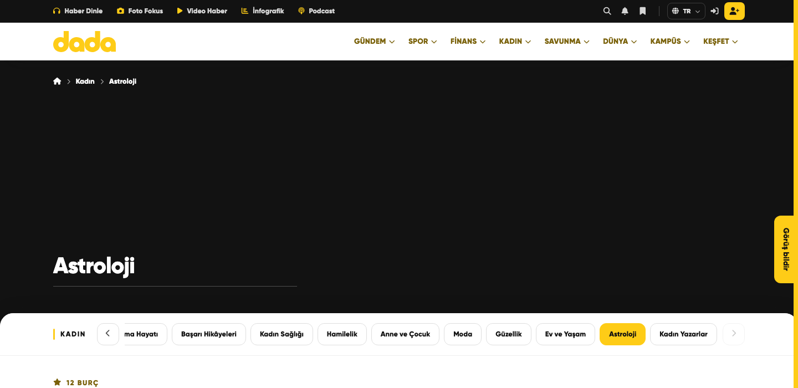

dadahaber.com'un okur sayfaları blok blok tarandı: her bloğun dolu mu, kaynak mı beklediği, hiç bağlanmamış mı, panelden mi doldurulacağı yoksa az içerikli mi olduğu. Son kısımda boş alanlar için görünüm seçenekleri var; bunlar uygulanmadı, onay bekliyor.
/api/v1/uygulama/yapilandirma › veri_servisleri). Kapalı olanlar: spor, trafik, resmî ilan (BİK); piyasada kripto, emtia, akaryakıt. Açık olanlar: döviz, altın, borsa, faiz ve enflasyon (EVDS), hava, namaz, deprem.Futbol gibi alt sayfalarda puan durumu ve fikstür yok
Spor veri kaynağı canlıda kapalı: yasal ve ücretsiz bir kaynak bulunamadı. Ç-63 kararına göre kaynaksız veri okura gösterilmez; puan durumu, fikstür, transfer ve takım profili bu yüzden gizli. Açmak için ticari bir sağlayıcı seçilmesi gerekiyor (ör. API-Football Pro). Bu maliyet kararı Yasin Bey'in.
Kural ihlali de var: "Canlı Maçlar ve Son Skorlar" kutusu 12 sayfada boş basılıyor. Alt menüde de kapalı servislerin bağlantısız çipleri duruyor. Kod: SiteSporSayfalari::skor(), SorguKategori::serit.
Astroloji'nin üstünde büyük siyah boş alan var
Bu alan liste sayfalarının banner'ı. Görseli şu sırayla aranır: kategorinin banner görseli, öne çıkan haberin kapağı, sitenin paylaşım görseli. Astroloji'de üçü de yok; geriye düz #121212 zemin kalıyor. Masaüstünde banner en az 380 px içerik yüksekliğiyle 496 px tutuyor; içinde yalnız kırıntı ve başlık var.
Aynı durum haberi olmayan 84 kategoride görülüyor (Kadın, Kampüs, Galatasaray…). Canlıda hiçbir kategorinin banner görseli girilmemiş (mega menüdeki 8 görselin 8'i de boş), site paylaşım görseli de yok. Kod: BannerKaynagi, liste.css .bn .kap{min-block-size:380px}.
Az haberli listeler boş görünüyor
125 kategori sayfasının 84'ünde 0, 28'inde 1–2, yalnız 13'ünde 3 ve üzeri haber var. Canlıda 70 haber var; AI hattı bunları birkaç ana konuya dağıtıyor. Kadın ve Kampüs ana başlıklarında hiç haber yok.
Üst konu alt konunun haberini toplamıyor. Futbol'da 1 haber görünüyor; Süper Lig'de 4, Fenerbahçe ve Trabzonspor'da birer haber olduğu halde. Yerel Haberler 0 gösteriyor; Ankara'da 1 haber var. Kapsam sorgusu t14'ün işinde.

Ç-63'e göre kaynağı bağlanmamış kalem okura boş ya da yarım görünmez. Aşağıdakiler bu kurala aykırı. Düzeltmesi ekranı kurala göre değiştiriyor, o yüzden önce lidere soruldu.
Canlıda "Gösterge oranlar" tablosunda yalnız TLREF satırı vardı, not satırı da tarihsizdi ("Yıllık basit oran · itibarıyla"). 92 güne kadar mevduat satırı sahte sürücünün anahtarıyla (92-gun) aranıyordu. EVDS'deki karşılığı (TP.TRY.MT02, 3 aya kadar vadeli) hiç eşleşmiyordu. Not saati de yalnız politika faizi serisinden okunuyordu; EVDS'de o seri yok.
Yapılan: satır iki anahtarla da bulunuyor; not saati politika faizi, gösterge ve mevduat sırasıyla aranıyor. Ekran prototipteki satırla aynı.
Dosya app/Moduller/OzelDikeyler/Veri/Http/Site/PiyasaSayfasi.php · yansıma testi tests/Yansima/OzelDikeyler/Veri/FinansFaizYansimaTest.php geçti (1 test, 19 doğrulama; düzeltme geri alınınca kırılıyor). Dokunduğu testler: VeriYansima ve AcikVeriYansima, 23/23 geçti. Canlıya yüklenmedi.
Prototipin ana sayfasındaki üç kardeş site bloğu için kodda yalnız parite yer tutucusu var. İçeriği kardeş sitelerden çekecek bir bağlantı ya da kayıtlı modül yok, bu yüzden canlıda hiç basılmıyorlar (doğru).
Neden bağlanmadı: bu veri sistemde yok. Bağlamak için kardeş sitelerin akışı (RSS ya da API) için yeni bir bağdaştırıcı gerekiyor; hangi içeriğin ve hangi sıklıkla geleceği iş kuralı. Karar bekliyor.
SiteAnaSayfa::DUZEN (yer: diet, gourmet, gastro) · resources/views/site/moduller/haberler/ana-sayfa/yer-tutucu/
Kategori banner'ı alt konulara kendiliğinden geçiyor (Ç-24). 8 ana başlığa görsel yüklenince 125 sayfanın hepsi görselli olur. Site paylaşım görseli (Ayarlar › Kimlik) son yedek olur; sosyal paylaşımlardaki logo görselinin yerini de alır.
Görsel ve öne çıkan haber yokken banner telefondaki gibi kısalır: kırıntı, başlık ve görev cümlesi, yaklaşık 160 px. Görsel gelince kendiliğinden tam banner'a döner.
banner.blade.php sınıf + liste.css 1 kural; parite notu.Kendi haberi olmayan alt konu, üst başlığının en yeni haberinin kapağını kullanır. O da yoksa düz siyah yerine marka renginde desenli bir zemin gelir.
BannerKaynagi zincirine bir halka; site ve API aynı (İ-27).Öneri: A hemen yapılsın, B de güvence olarak eklensin. C görsel seçme kuralını değiştirdiği için önerilmez.
Boş sayfa zaten noindex. Okur "henüz haber yok" yazısını görüyor.
Liste 8 kartın altındaysa altına "{Üst başlık}'tan diğer haberler" bölümü gelir. Üst başlık da boşsa sitenin en yeni haberleri gelir. Boş sayfada "henüz haber yok" satırı kalır, altında bu bölüm görünür. Sayfa sayısı ve noindex yalnız konunun kendi haberine bakar.
SiteKategoriSayfasi ve liste görünümü (t14'ün dosyası); API'de tamamlayici alanı; yansıma testi.Haberi olmayan alt konu mega menüde, alt menü çiplerinde, Tüm Kategoriler'de ve site haritasında görünmez. İlk haber gelince kendiliğinden görünür.
Öneri: B. Ayrıca üst konu alt konunun haberini toplasın (Futbol, Süper Lig'i içersin); bu t14'te sürüyor. Birlikte ele alınınca boş sayfa sayısı belirgin düşer. SEO notu: haberi olmayan sayfa noindex iken site haritasından da çıkmalı. Kural zaten var ama uygulanmıyor.
Ç-63'ün kendisi bu. Skor kutusu maç yoksa gizlenir. Hisse, politika faizi ve kredi tabloları satır yoksa basılmaz. Kapalı servis çipleri alt menüden, Tüm Kategoriler'den ve Sayfa Dizini'nden düşer.
Kod hazır: sürücü seçilip anahtar girilince puan durumu, fikstür, canlı skor, transfer ve takım profili kendiliğinden açılır.
config/baglastiricilar.php spor › acmak_icin.CanliKapi panelden elle eklenen lig ve kulübü zaten gösteriyor. Puan satırı ve maç girişi açılırsa Süper Lig gibi tek bir lig elle yürütülebilir.
Önerilen A. Bugünkü boş hal kalsın, menüde dursun. Tasarımdaki boş haller ("Henüz galeri yayımlanmadı" vb.) ve noindex doğru. İçerik geldikçe dolar. Ana sayfa blokları zaten içerik yokken basılmıyor.
B. İlk içerik gelene kadar menü ve alt bilgiden çıkar. Format ve multimedya sayfaları üst şeritte, alt bilgide ve Keşfet merkezinde görünmez. Ekranı değiştirir; Keşfet merkezi yarıya iner.
C. Hamilelik hesaplayıcısı hafta kaydı olmadan da görünsün. Hesaplayıcı veri istemiyor. Hafta kaydı yokken yalnız hesaplayıcı ve sağlık uyarısı basılır, "hafta rehberi" bağlantısı olmaz. Ekran değişir; küçük iş.
Astroloji'de günlük yorum yokken "Yay Burcu Bugün" kutusu boş halle duruyor. Seçenek: yorum yoksa kutu gizlensin, burç ızgarası kalsın. Bu B ile aynı türden bir karar.
| Sayfa | Blok | Durum | Neden | Kanıt (kod / kaynak) |
|---|